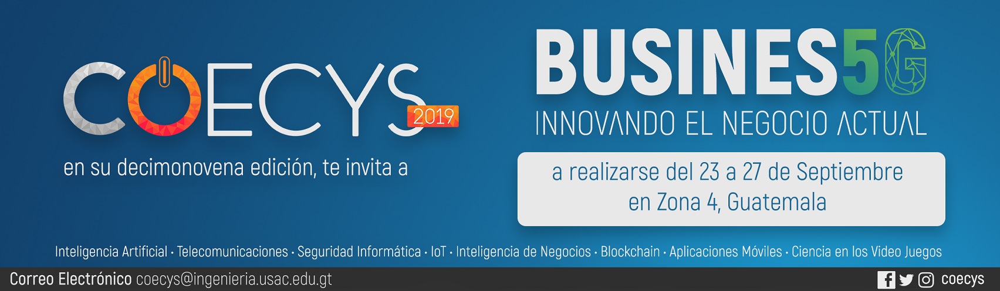

Voto Electrónico
Daniel Orlando Ajuchán Yancis
yancisdl@gmail.com
Estudiante de Ingeniería en Ciencias y Sistemas - USAC
El voto electrónico es visto como una modalidad en la cual se hace uso de sistemas electrónico-digitales en parte o en todo el proceso de votación para acelerar el procesamiento de los resultados, proporcionar asistencia tecnológica y en general, aportar eficiencia en los procesos de elección a cargos populares. Sin embargo, esta definición puede ser demasiado amplia, por lo que es necesario presentar los diferentes sistemas de votación electrónicos conocidos o más implementados en la actualidad.
Imagen 1 - Fuente: Mic
Registro Electrónico directo –DRE-
En estos sistemas, los electores emiten su voto utilizando un hardware que puede tener pantalla táctil, botones físicos, etc. Cada uno de estos aparatos cuenta con un disco duro para almacenar el conteo de votos de manera local. Al terminar el evento de votación, los resultados parciales de cada máquina se envían a un servidor para obtener los resultados finales. El problema con este sistema es que no existe una forma de garantizar que el voto emitido se haya registrado de manera correcta, o se haya contabilizado una sola vez debido a que este procedimiento se realiza de forma oculta a los usuarios.
Para evitar el problema del sistema anterior y garantizar que el registro y conteo de votos se realizó de forma correcta, surge la variante que implementa la impresión de una papeleta o comprobante de auditoría de papel verificado por el votante -VVPAT-. En esta variante cada uno de los aparatos además de tener la pantalla táctil cuentan con una impresora, que luego de registrar cada voto, imprimen la boleta con la información necesaria que se mostrará al usuario para asegurar que el voto se registró de manera correcta. Algo importante en este sistema es que la boleta impresa no se les entrega a los usuarios, únicamente se muestra (regularmente detrás de un cristal), para luego ser depositada en una urna. Utilizando esta modalidad, se puede llevar un conteo interno en cada aparato o se puede contar únicamente las boletas de cada urna. De esta manera el proceso se hace auditable y se evitan posibles fraudes que pueden darse en sistemas sin VVPAT
Reconocimiento Óptico de Marcas–OMR-
En estos sistemas se utilizan papeletas especiales en la que la opción elegida por el votante es reconocida por lectores ópticos. (OMR, OCR, ICR). Hay que notar que esta modalidad en realidad representa una asistencia en el proceso de conteo, ya que únicamente reconocen marcas en las boletas para contabilizarlas.
Existen dos formas de utilizar los lectores de reconocimientos ópticos de marcas, se puede disponer un lector en cada mesa para realizar el conteo cuando el votante introduce su voto en la urna, en este caso se lleva varios conteos parciales. Otra forma es utilizando este método es realizar el conteo de papeletas de forma centralizada pasando todas por un lector de este tipo.
Impresora de papeletas electrónicas – EBP-
En este sistema, el votante elige su candidato utilizando un aparato muy similar al utilizado en el sistema DRE, y luego de registrar el voto, este aparato imprime una boleta con marcas especiales para que pueda ser leída por un sistema óptico. De esta manera se separa el proceso de emisión de votos y el conteo de los mismos. También genera ayuda a generar confianza, ya que todos los electores pueden verificar su voto en las papeletas antes de depositarlo en las urnas donde serán contabilizados por el sistema óptico. Otro de los beneficios de este sistema es que las boletas serán leídas con un gran porcentaje de confianza, a diferencia de cuando se utilizan boletas marcadas por los usuarios, en donde regularmente los sistemas ópticos no reconocen las marcas de forma correcta. Esta modalidad es considerada una de las seguras, aunque por todo el hardware necesario, también es uno de los métodos más costosos de implementar, no solo en términos monetarios, también es necesario una capacitación adecuada para los usuarios.
Los sistemas descritos anteriormente se caracterizan porque los electores deben emitir su voto de forma presencial, es decir, deben asistir personalmente a los centros de votación autorizados, en donde se realiza manualmente la identificación de cada votante y luego son autorizados a emitir su sufragio, por lo tanto, no hay manera de relacionar el voto con el votante, lo cual se traduce en confianza por parte del elector ya que se mantiene el secreto del voto.
Existe también sistemas no presenciales, en los cuales no se necesita asistir a un lugar en particular, tampoco es necesario hardware especializado como en las modalidades anteriores, en estos casos la autenticación del votante y la emisión del sufragio se realiza en el mismo dispositivo (computadora, tablet, teléfono inteligente), usualmente se realizan a través de internet y siempre son independientes del dispositivo. En estos sistemas, los votos se registran conforme se van emitiendo ya que son transmitidos hacia un servidor, en el cual se tiene un conteo en tiempo real. Si bien este sistema ofrece resultados en tiempo real, también es uno de los más susceptibles a ataques tanto internos (manipulación del software durante su desarrollo) y externos (ataques a los servidores, manipulación de datos durante la transmisión, etc.).
Imagen 2 - Fuente: Voto electrónico
Al realizar la autenticación del votante y la emisión del voto en el mismo dispositivo, se corre el riesgo de que se pierda el carácter secreto del voto. Este sistema en particular, presenta muchas debilidades, aunque también ofrece beneficios que no se pueden conseguir con ninguno de los sistemas presenciales, por ejemplo: la accesibilidad ya que no es necesario reunirse en un lugar específico, lo cual beneficia en gran medida a personas con algún impedimento para transportarse de un lugar a otro; también provee rapidez y facilidad de uso ya que la mayoría de personas están familiarizados con dispositivos inteligentes. En general, provee una reducción significativa de costos.
Una de las características más importantes en un sistema de elección a cargos populares, es la transparencia desde antes de iniciar el proceso, hasta el conteo y publicación de los resultados finales, los sistemas de voto por internet y DRE (sin VVPAT) carecen de esta cualidad, en caso de éstos últimos, también presentan el inconveniente de que no todas las personas comprenden el uso de ese tipo de tecnología, esto hace que muchas personas en edad adulta desconfía de estos sistemas y más aún, en áreas rurales en donde el índice de analfabetismo es muy alto.
Independientemente del sistema que se implemente, se debe garantizar que se cumplan las características principales del voto: unicidad, es decir, que cada persona pueda votar una sola vez; el voto debe ser secreto, en otras palabras, que no haya ninguna forma de relacionar al votante con el voto y, por último, que únicamente las personas registradas en el padrón electoral puedan emitir su voto.
Imagen 3 - Fuente: Voto electrónico
Conclusiones:
La implementación de sistemas electrónicos y digitales en los procesos de votación ofrecen ventajas frente al sistema tradicional de voto utilizando papeletas impresas, por ejemplo: se obtienen resultados casi instantáneos al finalizar el evento. También proporciona mayor accesibilidad, en cuanto a idiomas, el hardware y software puede ser configurado para mostrar la información en distintos idiomas según sea necesario.
Los sistemas electrónicos presenciales ofrecen una mayor ventaja en cuanto a prevención de fraudes comparado con los que se hacen por medio de internet.
Referencias bibliográficas:
Luis Panizo Alonso (12/2017). Aspectos tecnológicos del voto electrónico. (02/04/2019).
Patricia pescado, Ariel Pasini. El voto electrónico sobre internet. (02/04/2019)
